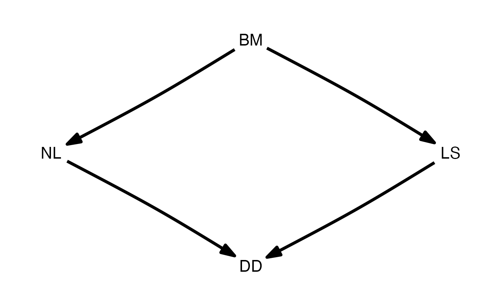
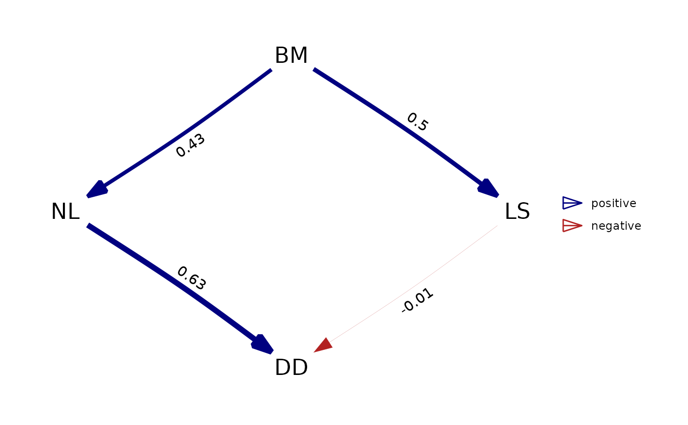
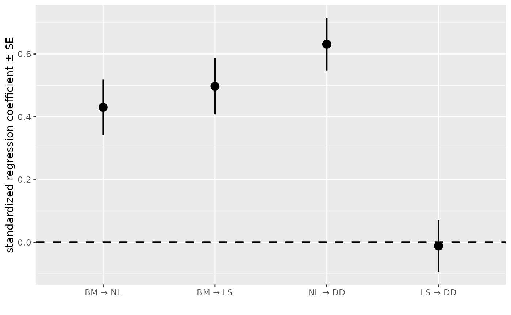
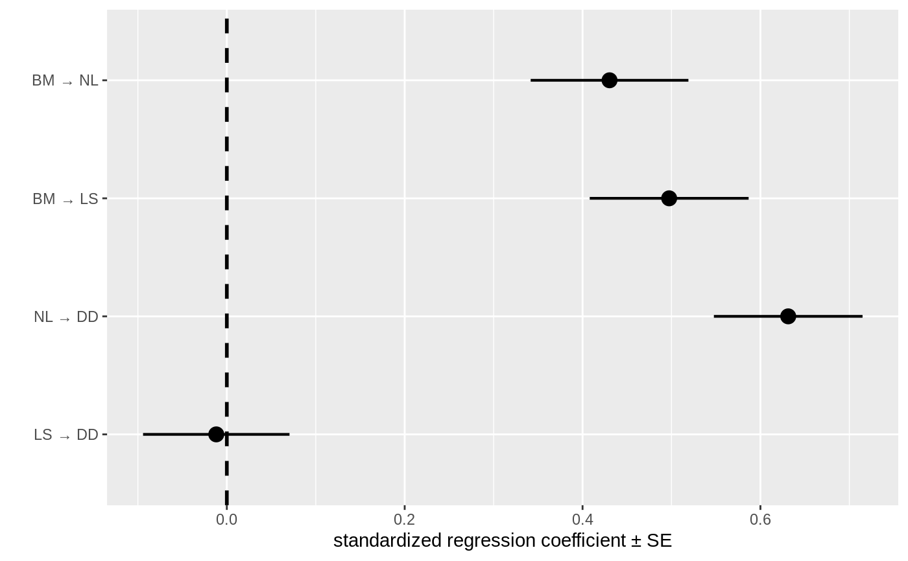

R/print_and_plot.R
coef_plot.RdPlot path coefficients and their confidence intervals or standard errors.
coef_plot(
fitted_DAG,
error_bar = "ci",
order_by = "default",
from = NULL,
to = NULL,
reverse_order = FALSE
)A fitted DAG, usually obtained by best(), average() or est_DAG().
Whether to use confidence intervals ("ci") or standard errors ("se") as
error bars. Will force standard errors with a message if confidence intervals are not
available.
By "default", the paths are ordered as in the the model that is supplied.
Usually this is in the order that was established by [phylo_path()] for all combined graphs.
This can be change to "causal" to do a reordering based on the model at hand, or to
"strength" to order them by the standardized regression coefficient.
Only show path coefficients from these nodes. Supply as a character vector.
Only show path coefficients to these nodes. Supply as a character vector.
If TRUE, the paths are plotted in reverse order.
Particularly useful in combination with ggplot2::coord_flip() to create
horizontal versions of the plot.
A ggplot object.
d <- DAG(LS ~ BM, NL ~ BM, DD ~ NL + LS)
plot(d)

d_fitted <- est_DAG(d, rhino, rhino_tree, 'lambda')
plot(d_fitted)

coef_plot(d_fitted, error_bar = "se")

# to create a horizontal version, use this:
coef_plot(d_fitted, error_bar = "se", reverse_order = TRUE) + ggplot2::coord_flip()
